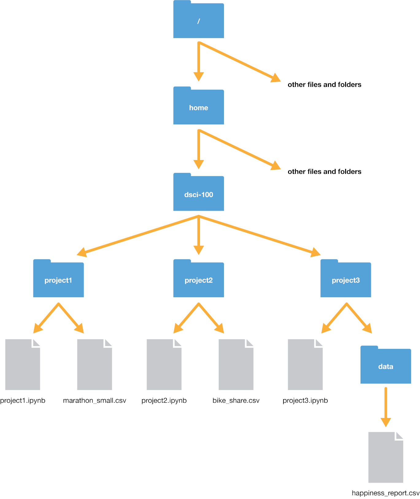
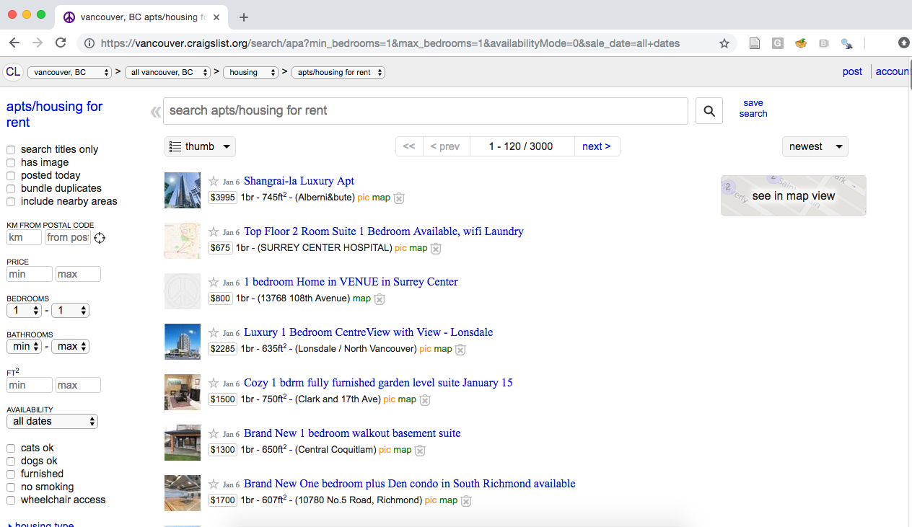
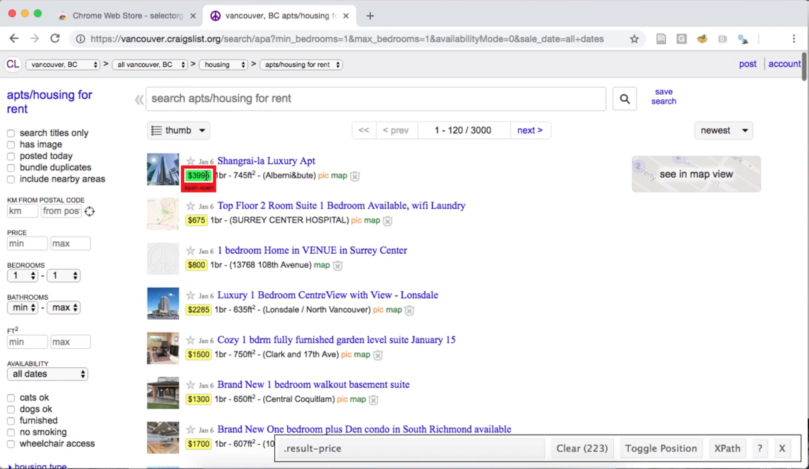
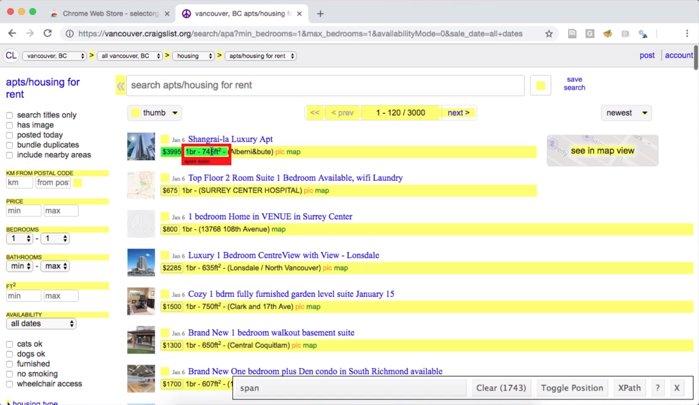
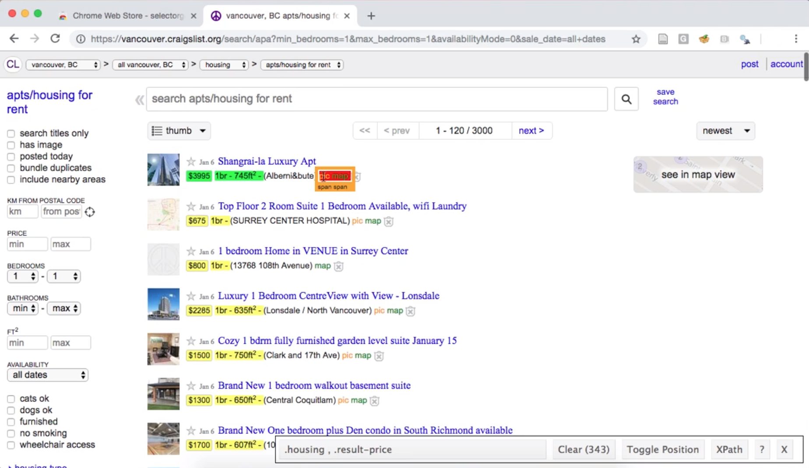
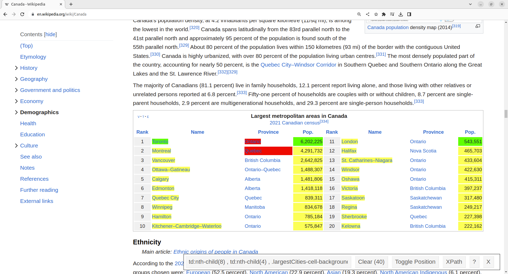
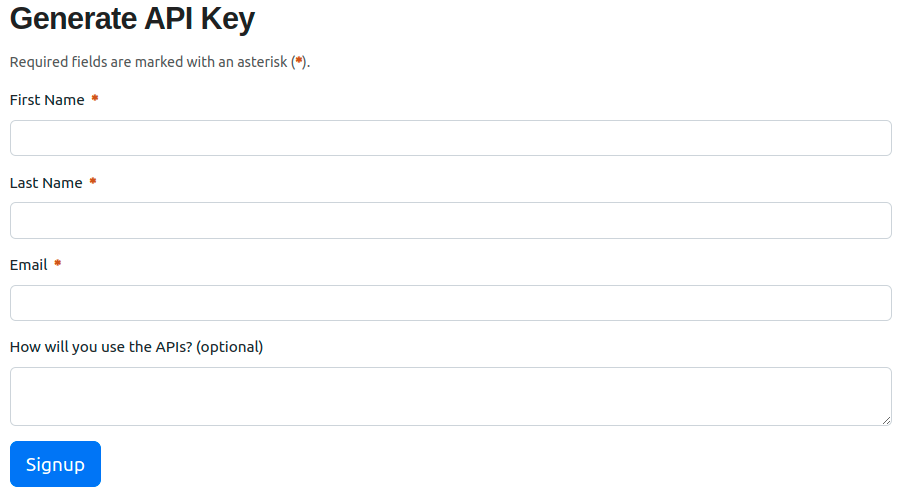
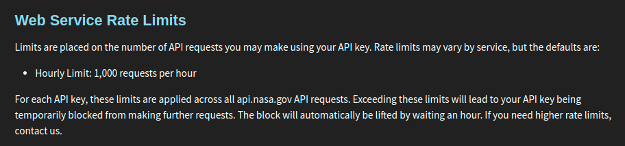
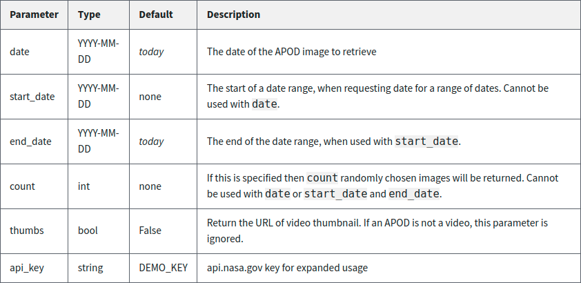

2. 从本地和网络读取数据#
2.1. 概述#
本章将教你如何从本地设备（例如你自己的笔记本电脑）和网络，把各种格式的表格型数据（tabular data）读入 Python。“读取”（或称“加载”）指的是把数据（以纯文本、数据库、HTML 等形式存储）转换成 Python 能方便访问和操作的对象，例如数据框（data frame）。因此，读取数据是通往任何数据分析的门户：不先把数据加载进来，你就无法分析数据。又因为存储数据的方式很多，把数据读入 Python 的方式也同样很多。你越是提前把读取方法与手头数据的类型匹配好，之后需要花在重新格式化、清洗和整理数据上的时间就越少（这是所有数据分析的第二步）。这就好比跑步前先把鞋带系紧，免得跑到半路被绊倒！
2.2. 本章学习目标#
学完本章后，你将能够：
定义路径的类型，并用它们定位文件：
绝对文件路径
相对文件路径
统一资源定位符（Uniform Resource Locator，URL）
用下列函数从不同类型的路径把数据读入 Python：
read_csvread_excel
比较
read_csv与read_excel的异同。说明在什么情形下使用下列
read_csv函数参数：skiprowssepheadernames
针对给定的纯文本表格型数据集，选择合适的
read_csv函数参数把它读入 Python。用
rename函数给数据框的列重命名。用
pandas包的read_excel函数及其参数，把 Excel 文件中的工作表读入 Python。用
ibis包中的函数操作数据库：用
connect连接数据库。用
list_tables列出数据库中的表。用
table创建对数据库表的引用。用
execute把数据库中的数据取回 Python。
用
to_csv把数据框保存为.csv文件。（可选）用网页抓取和应用程序编程接口（application programming interface，API）从网络获取数据：
用
BeautifulSoup包从 URL 读取 HTML 源代码。用
requests包读取 NASA 的“Astronomy Picture of the Day”数据。比较以下三种做法：从纯文本文件（例如
.csv）下载表格型数据、从 API 访问数据，以及抓取网站的 HTML 源代码。
2.3. 绝对路径与相对路径#
本章会讨论把数据导入 Python 的各种函数。不过，在讲这些函数如何把数据读入 Python 之前，我们先要说清数据存在哪里。把数据集载入 Python 时，你首先需要告诉 Python 这些文件在哪里。文件可能存放在你的电脑上（本地），也可能存放在互联网上的某个地方（远程）。
文件在电脑上的存放位置称为它的“路径”。你可以把路径理解为通往该文件的路线。路径分两种：相对路径和绝对路径。相对路径（relative path）说明文件相对于电脑上工作目录（也就是“你当前所在的位置”）的位置。绝对路径（absolute path）说明的则是文件相对于计算机文件系统根部（即根文件夹）的位置，与你在哪里工作无关。
假设我们电脑的文件系统如图 2.1 所示。我们正在编辑的文件是 project3.ipynb，当前工作目录是 project3；通常情况下（本例正是如此），工作目录就是存放你当前正在处理的文件的目录。

图 2.1 文件系统示例#
假设我们要打开 happiness_report.csv 文件。要指明文件的位置，有两种选择：用相对路径，或者用绝对路径。文件的绝对路径总以斜杠 / 开头——它代表计算机上的根文件夹——然后依次列出到达该文件所须逐层进入的文件夹，每层之间再用一个斜杠 / 隔开。因此在本例中，要到达 happiness_report.csv，得从根文件夹出发，先进入 home 文件夹，再进入 dsci-100 文件夹，然后是 project3 文件夹，最后进入 data 文件夹。所以它的绝对路径是 /home/dsci-100/project3/data/happiness_report.csv。我们可以把绝对路径当作字符串传给 pandas 的 read_csv 函数，用它加载这个文件。
happy_data = pd.read_csv("/home/dsci-100/project3/data/happiness_report.csv")
如果改用相对路径，就需要依次列出从当前工作目录走到该文件所需的每一步，各步之间用斜杠 / 隔开。由于我们当前就在 project3 文件夹里，只需再进入 data 文件夹就能到达目标文件。因此相对路径是 data/happiness_report.csv，把它当作字符串传给 read_csv 即可加载文件。
happy_data = pd.read_csv("data/happiness_report.csv")
请注意，相对路径的开头没有正斜杠；如果不小心写成 "/data/happiness_report.csv"，Python 就会去计算机的根文件夹里找名为 data 的文件夹——可它并不存在！
除了用文件夹名（如 data 和 project3）在路径中指明要走到哪里，我们还可以指明两个特殊位置：当前目录和上一级目录。当前工作目录用单个点 . 表示，上一级目录用两个点 .. 表示。举例来说，如果要从 project3 文件夹到达 bike_share.csv 文件，可以用相对路径 ../project2/bike_share.csv。这两个符号还能组合使用；例如下面这条（相当傻的）路径也能到达 bike_share.csv：../project2/../project2/./bike_share.csv，它绕了不少冤枉路——先退回上一层文件夹，再打开 project2，然后又退回上一层，再打开 project2，接着留在当前目录，最后才到达 bike_share.csv。呼，好长的一段路！
那么该用哪种路径：相对路径，还是绝对路径？一般来说，应该用相对路径。用相对路径有助于保证你的代码能在另一台电脑上运行（附带的好处是，相对路径往往更短——敲起来更省事！）。这是因为同一个文件的相对路径在不同电脑上往往相同，而文件的绝对路径（即计算机根目录——用 / 表示——与该文件之间所有文件夹的名称）在不同电脑上通常并不相同。例如，假设 Fatima 和 Jayden 在合作一个项目，用的数据是 happiness_report.csv。Fatima 的文件存放在
/home/Fatima/project3/data/happiness_report.csv
而 Jayden 的文件存放在
/home/Jayden/project3/data/happiness_report.csv
尽管 Fatima 和 Jayden 把文件存放在各自电脑上的相同位置（都在自己的主文件夹里），但由于用户名不同，绝对路径并不一样。如果 Jayden 有一段用绝对路径加载 happiness_report.csv 数据的代码，这段代码在 Fatima 的电脑上就跑不通。但从 project3 文件夹内部看，相对路径（data/happiness_report.csv）在两台电脑上完全相同；凡是用相对路径的代码，两台电脑上都能运行！在拓展资源一节中，我们附上了一个短视频的链接，讲的是绝对路径与相对路径的区别。
除了存放在你电脑上的文件（即本地文件），我们还需要一种办法来定位存放在互联网别处的资源（即远程资源）。为此我们使用统一资源定位符（URL），也就是形如 https://python.datasciencebook.ca/ 的网址。URL 指明资源在互联网上的位置：它以网络域名开头，接着是一个正斜杠 /，然后是指向该资源在远程机器上所在位置的路径。
2.4. 从纯文本文件把表格型数据读入 Python#
2.4.1. 用 read_csv 读取逗号分隔值文件#
我们已经了解了数据可能在哪里，接下来学习如何用各种函数把数据导入 Python。具体来说，我们要学会把纯文本文件（只含文本的文档）中的表格型数据读入 Python，以及把表格型数据写出到文件中。用哪个函数取决于文件的格式。例如上一章我们学过，读取 .csv（comma-separated values，逗号分隔值）文件时要使用 pandas 的 read_csv 函数。那时，分隔各列的分隔符（separator）是逗号（,）。我们当时只学了数据符合 read_csv 函数默认预期的情况（文件含列名，且以逗号作为列间分隔符）。本节要学习如何读取那些不满足 read_csv 默认预期的文件。
在进入数据不符合 pandas 与 read_csv 默认格式的那些情形之前，我们先回顾一个更简单的情形：默认预期成立，我们只需给函数一个参数，也就是文件的路径 data/can_lang.csv。can_lang 数据集包含 2016 年加拿大人口普查的语言数据。加载这份数据集时，我们在文件名前加上 data/，因为相对于运行 Python 代码的位置，该数据集位于名为 data 的子文件夹中。文件 data/can_lang.csv 的内容如下。
category,language,mother_tongue,most_at_home,most_at_work,lang_known
Aboriginal languages,"Aboriginal languages, n.o.s.",590,235,30,665
Non-Official & Non-Aboriginal languages,Afrikaans,10260,4785,85,23415
Non-Official & Non-Aboriginal languages,"Afro-Asiatic languages, n.i.e.",1150,44
Non-Official & Non-Aboriginal languages,Akan (Twi),13460,5985,25,22150
Non-Official & Non-Aboriginal languages,Albanian,26895,13135,345,31930
Aboriginal languages,"Algonquian languages, n.i.e.",45,10,0,120
Aboriginal languages,Algonquin,1260,370,40,2480
Non-Official & Non-Aboriginal languages,American Sign Language,2685,3020,1145,21
Non-Official & Non-Aboriginal languages,Amharic,22465,12785,200,33670
下面回顾一下怎样用 read_csv 把它加载到 Python 中。首先加载 pandas 包，以便使用其中读取数据的实用函数。
import pandas as pd
接着用 read_csv 把数据加载到 Python 中，并在调用时指定文件的相对路径。
canlang_data = pd.read_csv("data/can_lang.csv")
canlang_data
| category | language | mother_tongue | most_at_home | most_at_work | lang_known | |
|---|---|---|---|---|---|---|
| 0 | Aboriginal languages | Aboriginal languages, n.o.s. | 590 | 235 | 30 | 665 |
| 1 | Non-Official & Non-Aboriginal languages | Afrikaans | 10260 | 4785 | 85 | 23415 |
| 2 | Non-Official & Non-Aboriginal languages | Afro-Asiatic languages, n.i.e. | 1150 | 445 | 10 | 2775 |
| 3 | Non-Official & Non-Aboriginal languages | Akan (Twi) | 13460 | 5985 | 25 | 22150 |
| 4 | Non-Official & Non-Aboriginal languages | Albanian | 26895 | 13135 | 345 | 31930 |
| ... | ... | ... | ... | ... | ... | ... |
| 209 | Non-Official & Non-Aboriginal languages | Wolof | 3990 | 1385 | 10 | 8240 |
| 210 | Aboriginal languages | Woods Cree | 1840 | 800 | 75 | 2665 |
| 211 | Non-Official & Non-Aboriginal languages | Wu (Shanghainese) | 12915 | 7650 | 105 | 16530 |
| 212 | Non-Official & Non-Aboriginal languages | Yiddish | 13555 | 7085 | 895 | 20985 |
| 213 | Non-Official & Non-Aboriginal languages | Yoruba | 9080 | 2615 | 15 | 22415 |
214 rows × 6 columns
2.4.2. 读取数据时跳过若干行#
数据文件的顶部常常会带有关于数据收集方式的信息，或者其他一些信息。这类信息通常以句子和段落的形式书写，中间没有分隔符，因为它并没有按列组织。下面是一个例子。这些信息为数据科学家提供了理解数据的背景和线索，但它的格式并不规整，也不应该和文件后面那些表格型数据一起读入数据框的单元格中。
Data source: https://ttimbers.github.io/canlang/
Data originally published in: Statistics Canada Census of Population 2016.
Reproduced and distributed on an as-is basis with their permission.
category,language,mother_tongue,most_at_home,most_at_work,lang_known
Aboriginal languages,"Aboriginal languages, n.o.s.",590,235,30,665
Non-Official & Non-Aboriginal languages,Afrikaans,10260,4785,85,23415
Non-Official & Non-Aboriginal languages,"Afro-Asiatic languages, n.i.e.",1150,445,10,2775
Non-Official & Non-Aboriginal languages,Akan (Twi),13460,5985,25,22150
Non-Official & Non-Aboriginal languages,Albanian,26895,13135,345,31930
Aboriginal languages,"Algonquian languages, n.i.e.",45,10,0,120
Aboriginal languages,Algonquin,1260,370,40,2480
Non-Official & Non-Aboriginal languages,American Sign Language,2685,3020,1145,21930
Non-Official & Non-Aboriginal languages,Amharic,22465,12785,200,33670
文件顶部多了这些信息之后，像刚才那样使用 read_csv 就无法把数据正确加载到 Python 中。对这个文件来说，Python 只会打印一条 ParserError 报错信息，表示它读不了这个文件。
canlang_data = pd.read_csv("data/can_lang_meta-data.csv")
ParserError: Error tokenizing data. C error: Expected 1 fields in line 4, saw 6
要顺利地把这类数据读入 Python，可以用 skiprows 参数告诉 Python 在开始读取数据之前先跳过多少行。在上面的例子里，把它设为 3 就能正确读取并加载数据。
canlang_data = pd.read_csv("data/can_lang_meta-data.csv", skiprows=3)
canlang_data
| category | language | mother_tongue | most_at_home | most_at_work | lang_known | |
|---|---|---|---|---|---|---|
| 0 | Aboriginal languages | Aboriginal languages, n.o.s. | 590 | 235 | 30 | 665 |
| 1 | Non-Official & Non-Aboriginal languages | Afrikaans | 10260 | 4785 | 85 | 23415 |
| 2 | Non-Official & Non-Aboriginal languages | Afro-Asiatic languages, n.i.e. | 1150 | 445 | 10 | 2775 |
| 3 | Non-Official & Non-Aboriginal languages | Akan (Twi) | 13460 | 5985 | 25 | 22150 |
| 4 | Non-Official & Non-Aboriginal languages | Albanian | 26895 | 13135 | 345 | 31930 |
| ... | ... | ... | ... | ... | ... | ... |
| 209 | Non-Official & Non-Aboriginal languages | Wolof | 3990 | 1385 | 10 | 8240 |
| 210 | Aboriginal languages | Woods Cree | 1840 | 800 | 75 | 2665 |
| 211 | Non-Official & Non-Aboriginal languages | Wu (Shanghainese) | 12915 | 7650 | 105 | 16530 |
| 212 | Non-Official & Non-Aboriginal languages | Yiddish | 13555 | 7085 | 895 | 20985 |
| 213 | Non-Official & Non-Aboriginal languages | Yoruba | 9080 | 2615 | 15 | 22415 |
214 rows × 6 columns
我们怎么知道要跳过三行？看看数据就知道了！数据的前三行是我们不需要导入的信息：
Data source: https://ttimbers.github.io/canlang/
Data originally published in: Statistics Canada Census of Population 2016.
Reproduced and distributed on an as-is basis with their permission.
列名从第 4 行开始，所以我们跳过了前三行。
2.4.3. 用 sep 参数处理不同的分隔符#
另一种常见的数据存储方式是用制表符作分隔符。可以看到，数据文件 can_lang.tsv 的列与列之间用的是制表符，而不是逗号。
category language mother_tongue most_at_home most_at_work lang_known
Aboriginal languages Aboriginal languages, n.o.s. 590 235 30 665
Non-Official & Non-Aboriginal languages Afrikaans 10260 4785 85 23415
Non-Official & Non-Aboriginal languages Afro-Asiatic languages, n.i.e. 1150 445 10 2775
Non-Official & Non-Aboriginal languages Akan (Twi) 13460 5985 25 22150
Non-Official & Non-Aboriginal languages Albanian 26895 13135 345 31930
Aboriginal languages Algonquian languages, n.i.e. 45 10 0 120
Aboriginal languages Algonquin 1260 370 40 2480
Non-Official & Non-Aboriginal languages American Sign Language 2685 3020 1145 21930
Non-Official & Non-Aboriginal languages Amharic 22465 12785 200 33670
要读取 .tsv（tab separated values，制表符分隔值）文件，可以把 read_csv 函数的 sep 参数设为制表符（tab character） \t。
备注
\t 是一个转义字符（escaped character），它总以反斜杠（\）开头。转义字符用来表示不可打印的字符（如制表符），或者具有特殊含义的字符（如引号）。
canlang_data = pd.read_csv("data/can_lang.tsv", sep="\t")
canlang_data
| category | language | mother_tongue | most_at_home | most_at_work | lang_known | |
|---|---|---|---|---|---|---|
| 0 | Aboriginal languages | Aboriginal languages, n.o.s. | 590 | 235 | 30 | 665 |
| 1 | Non-Official & Non-Aboriginal languages | Afrikaans | 10260 | 4785 | 85 | 23415 |
| 2 | Non-Official & Non-Aboriginal languages | Afro-Asiatic languages, n.i.e. | 1150 | 445 | 10 | 2775 |
| 3 | Non-Official & Non-Aboriginal languages | Akan (Twi) | 13460 | 5985 | 25 | 22150 |
| 4 | Non-Official & Non-Aboriginal languages | Albanian | 26895 | 13135 | 345 | 31930 |
| ... | ... | ... | ... | ... | ... | ... |
| 209 | Non-Official & Non-Aboriginal languages | Wolof | 3990 | 1385 | 10 | 8240 |
| 210 | Aboriginal languages | Woods Cree | 1840 | 800 | 75 | 2665 |
| 211 | Non-Official & Non-Aboriginal languages | Wu (Shanghainese) | 12915 | 7650 | 105 | 16530 |
| 212 | Non-Official & Non-Aboriginal languages | Yiddish | 13555 | 7085 | 895 | 20985 |
| 213 | Non-Official & Non-Aboriginal languages | Yoruba | 9080 | 2615 | 15 | 22415 |
214 rows × 6 columns
把这里的数据框与我们在第 2.4.1 节中用 read_csv 得到的数据框比较一下，你会发现它们看起来完全一样：列数和行数相同，列名相同，每个单元格的取值也相同！所以，尽管文件格式不同、需要用到的参数也不同，两种做法得到的数据框（canlang_data）是一样的。
2.4.4. 用 header 参数处理缺少列名的情况#
can_lang_no_names.tsv 文件是这份数据集的另一个版本，略有不同：它没有列名，并用制表符作分隔符。在文本编辑器中，该文件的内容如下：
Aboriginal languages Aboriginal languages, n.o.s. 590 235 30 665
Non-Official & Non-Aboriginal languages Afrikaans 10260 4785 85 23415
Non-Official & Non-Aboriginal languages Afro-Asiatic languages, n.i.e. 1150 445 10 2775
Non-Official & Non-Aboriginal languages Akan (Twi) 13460 5985 25 22150
Non-Official & Non-Aboriginal languages Albanian 26895 13135 345 31930
Aboriginal languages Algonquian languages, n.i.e. 45 10 0 120
Aboriginal languages Algonquin 1260 370 40 2480
Non-Official & Non-Aboriginal languages American Sign Language 2685 3020 1145 21930
Non-Official & Non-Aboriginal languages Amharic 22465 12785 200 33670
Python 中的数据框必须有列名。因此，如果读入的数据没有列名，Python 会自动指派名称。在这个例子里，Python 指派的列名是 0, 1, 2, 3, 4, 5。要把这份数据读入 Python，我们把第一个参数指定为文件的路径（与 read_csv 的用法一致），再给 sep 参数赋值（这里是制表符，写作 "\t"），最后设置 header = None，告诉 pandas 这个数据文件本身不含列名。
canlang_data = pd.read_csv(
"data/can_lang_no_names.tsv",
sep="\t",
header=None
)
canlang_data
| 0 | 1 | 2 | 3 | 4 | 5 | |
|---|---|---|---|---|---|---|
| 0 | Aboriginal languages | Aboriginal languages, n.o.s. | 590 | 235 | 30 | 665 |
| 1 | Non-Official & Non-Aboriginal languages | Afrikaans | 10260 | 4785 | 85 | 23415 |
| 2 | Non-Official & Non-Aboriginal languages | Afro-Asiatic languages, n.i.e. | 1150 | 445 | 10 | 2775 |
| 3 | Non-Official & Non-Aboriginal languages | Akan (Twi) | 13460 | 5985 | 25 | 22150 |
| 4 | Non-Official & Non-Aboriginal languages | Albanian | 26895 | 13135 | 345 | 31930 |
| ... | ... | ... | ... | ... | ... | ... |
| 209 | Non-Official & Non-Aboriginal languages | Wolof | 3990 | 1385 | 10 | 8240 |
| 210 | Aboriginal languages | Woods Cree | 1840 | 800 | 75 | 2665 |
| 211 | Non-Official & Non-Aboriginal languages | Wu (Shanghainese) | 12915 | 7650 | 105 | 16530 |
| 212 | Non-Official & Non-Aboriginal languages | Yiddish | 13555 | 7085 | 895 | 20985 |
| 213 | Non-Official & Non-Aboriginal languages | Yoruba | 9080 | 2615 | 15 | 22415 |
214 rows × 6 columns
这种情况下，最好还是手动给各列重命名。现在的列名（0, 1 等）有两个问题：一是这些名字说明不了什么，会让你的分析难以理解；二是列名一般应该是字符串，而它们现在是整数。要给列重命名，可以使用 pandas 包中的 rename 函数。rename 函数的参数是 columns，它接收旧列名与新列名之间的映射。这里我们想把 canlang_data 数据框中的旧列名（0, 1, ..., 5）改成更能说明含义的名字。
要指定映射关系，我们创建一个字典（dictionary）：它是 Python 的一种对象，表示从键（key）到取值（value）的映射。创建字典时用一对花括号 { }，括号内放入若干 key : value 对，彼此用逗号分隔。下面我们创建一个名为 col_map 的字典，把 canlang_data 中的旧列名映射到新列名，然后把它传给 rename 函数。
col_map = {
0 : "category",
1 : "language",
2 : "mother_tongue",
3 : "most_at_home",
4 : "most_at_work",
5 : "lang_known"
}
canlang_data_renamed = canlang_data.rename(columns=col_map)
canlang_data_renamed
| category | language | mother_tongue | most_at_home | most_at_work | lang_known | |
|---|---|---|---|---|---|---|
| 0 | Aboriginal languages | Aboriginal languages, n.o.s. | 590 | 235 | 30 | 665 |
| 1 | Non-Official & Non-Aboriginal languages | Afrikaans | 10260 | 4785 | 85 | 23415 |
| 2 | Non-Official & Non-Aboriginal languages | Afro-Asiatic languages, n.i.e. | 1150 | 445 | 10 | 2775 |
| 3 | Non-Official & Non-Aboriginal languages | Akan (Twi) | 13460 | 5985 | 25 | 22150 |
| 4 | Non-Official & Non-Aboriginal languages | Albanian | 26895 | 13135 | 345 | 31930 |
| ... | ... | ... | ... | ... | ... | ... |
| 209 | Non-Official & Non-Aboriginal languages | Wolof | 3990 | 1385 | 10 | 8240 |
| 210 | Aboriginal languages | Woods Cree | 1840 | 800 | 75 | 2665 |
| 211 | Non-Official & Non-Aboriginal languages | Wu (Shanghainese) | 12915 | 7650 | 105 | 16530 |
| 212 | Non-Official & Non-Aboriginal languages | Yiddish | 13555 | 7085 | 895 | 20985 |
| 213 | Non-Official & Non-Aboriginal languages | Yoruba | 9080 | 2615 | 15 | 22415 |
214 rows × 6 columns
也可以在读文件时就把列名赋给数据框：向 read_csv 的 names 参数传入一个列名列表（list）即可。
canlang_data = pd.read_csv(
"data/can_lang_no_names.tsv",
sep="\t",
header=None,
names=[
"category",
"language",
"mother_tongue",
"most_at_home",
"most_at_work",
"lang_known",
],
)
canlang_data
| category | language | mother_tongue | most_at_home | most_at_work | lang_known | |
|---|---|---|---|---|---|---|
| 0 | Aboriginal languages | Aboriginal languages, n.o.s. | 590 | 235 | 30 | 665 |
| 1 | Non-Official & Non-Aboriginal languages | Afrikaans | 10260 | 4785 | 85 | 23415 |
| 2 | Non-Official & Non-Aboriginal languages | Afro-Asiatic languages, n.i.e. | 1150 | 445 | 10 | 2775 |
| 3 | Non-Official & Non-Aboriginal languages | Akan (Twi) | 13460 | 5985 | 25 | 22150 |
| 4 | Non-Official & Non-Aboriginal languages | Albanian | 26895 | 13135 | 345 | 31930 |
| ... | ... | ... | ... | ... | ... | ... |
| 209 | Non-Official & Non-Aboriginal languages | Wolof | 3990 | 1385 | 10 | 8240 |
| 210 | Aboriginal languages | Woods Cree | 1840 | 800 | 75 | 2665 |
| 211 | Non-Official & Non-Aboriginal languages | Wu (Shanghainese) | 12915 | 7650 | 105 | 16530 |
| 212 | Non-Official & Non-Aboriginal languages | Yiddish | 13555 | 7085 | 895 | 20985 |
| 213 | Non-Official & Non-Aboriginal languages | Yoruba | 9080 | 2615 | 15 | 22415 |
214 rows × 6 columns
2.4.5. 直接从 URL 读取表格型数据#
我们还可以用 read_csv 直接从 URL（Uniform Resource Locator）读取含有表格型数据的内容。这时传给 read_csv 的是远程文件的 URL，而不是本机文件的路径。和指定本机路径时一样，URL 也要用引号括起来。除此之外，其他参数与读取本机文件时完全相同。
url = "https://raw.githubusercontent.com/UBC-DSCI/introduction-to-datascience-python/reading/source/data/can_lang.csv"
pd.read_csv(url)
canlang_data = pd.read_csv(url)
canlang_data
| category | language | mother_tongue | most_at_home | most_at_work | lang_known | |
|---|---|---|---|---|---|---|
| 0 | Aboriginal languages | Aboriginal languages, n.o.s. | 590 | 235 | 30 | 665 |
| 1 | Non-Official & Non-Aboriginal languages | Afrikaans | 10260 | 4785 | 85 | 23415 |
| 2 | Non-Official & Non-Aboriginal languages | Afro-Asiatic languages, n.i.e. | 1150 | 445 | 10 | 2775 |
| 3 | Non-Official & Non-Aboriginal languages | Akan (Twi) | 13460 | 5985 | 25 | 22150 |
| 4 | Non-Official & Non-Aboriginal languages | Albanian | 26895 | 13135 | 345 | 31930 |
| ... | ... | ... | ... | ... | ... | ... |
| 209 | Non-Official & Non-Aboriginal languages | Wolof | 3990 | 1385 | 10 | 8240 |
| 210 | Aboriginal languages | Woods Cree | 1840 | 800 | 75 | 2665 |
| 211 | Non-Official & Non-Aboriginal languages | Wu (Shanghainese) | 12915 | 7650 | 105 | 16530 |
| 212 | Non-Official & Non-Aboriginal languages | Yiddish | 13555 | 7085 | 895 | 20985 |
| 213 | Non-Official & Non-Aboriginal languages | Yoruba | 9080 | 2615 | 15 | 22415 |
214 rows × 6 columns
2.4.6. 读入 Python 之前先预览数据文件#
上面不少例子中，我们都在把数据读入 Python 之前先给你看了数据文件的预览。预览数据很重要：它能让你看出有没有列名、分隔符是什么、有没有需要跳过的行。你自己读取数据文件时也应该这样做：先用你喜欢的文本编辑器打开文件，看清内容之后再读入 Python。
2.5. 从 Microsoft Excel 文件中读取表格型数据#
除了纯文本文件，存储表格型数据集还有很多其他方式；同样，把这些数据集读入 Python 也有很多办法。例如，以 Microsoft Excel 电子表格形式存储的数据（文件扩展名为 .xlsx）十分常见，你也经常需要把它们读入 Python。要做到这一点，有一个关键之处需要了解：把 .csv 文件和 .xlsx 文件加载到 Excel 中时，两者看起来几乎一模一样，但数据本身的存储方式完全不同。.csv 文件是纯文本文件，在文本编辑器中打开文件时看到的字符就是它们所表示的数据；.xlsx 文件则不是这样。下面这段内容展示了 .xlsx 文件在文本编辑器里大致是什么样子：
,?'O
_rels/.rels???J1??>E?{7?
<?V????w8?'J???'QrJ???Tf?d??d?o?wZ'???@>?4'?|??hlIo??F
t 8f??3wn
????t??u"/
%~Ed2??<?w??
?Pd(??J-?E???7?'t(?-GZ?????y???c~N?g[^_r?4
yG?O
?K??G?
]TUEe??O??c[???????6q??s??d?m???\???H?^????3} ?rZY? ?:L60?^?????XTP+?|?
X?a??4VT?,D?Jq
这种文件表示方式让 Excel 文件能够存储 .csv 文件里无法存储的额外内容，比如字体、文本格式、图形、多个工作表等等。尽管 Excel 电子表格在纯文本编辑器里看起来很奇怪，我们仍然可以用 pandas 包中专门为此开发的 read_excel 函数把它读入 Python。
canlang_data = pd.read_excel("data/can_lang.xlsx")
canlang_data
| category | language | mother_tongue | most_at_home | most_at_work | lang_known | |
|---|---|---|---|---|---|---|
| 0 | Aboriginal languages | Aboriginal languages, n.o.s. | 590 | 235 | 30 | 665 |
| 1 | Non-Official & Non-Aboriginal languages | Afrikaans | 10260 | 4785 | 85 | 23415 |
| 2 | Non-Official & Non-Aboriginal languages | Afro-Asiatic languages, n.i.e. | 1150 | 445 | 10 | 2775 |
| 3 | Non-Official & Non-Aboriginal languages | Akan (Twi) | 13460 | 5985 | 25 | 22150 |
| 4 | Non-Official & Non-Aboriginal languages | Albanian | 26895 | 13135 | 345 | 31930 |
| ... | ... | ... | ... | ... | ... | ... |
| 209 | Non-Official & Non-Aboriginal languages | Wolof | 3990 | 1385 | 10 | 8240 |
| 210 | Aboriginal languages | Woods Cree | 1840 | 800 | 75 | 2665 |
| 211 | Non-Official & Non-Aboriginal languages | Wu (Shanghainese) | 12915 | 7650 | 105 | 16530 |
| 212 | Non-Official & Non-Aboriginal languages | Yiddish | 13555 | 7085 | 895 | 20985 |
| 213 | Non-Official & Non-Aboriginal languages | Yoruba | 9080 | 2615 | 15 | 22415 |
214 rows × 6 columns
如果 .xlsx 文件包含多个工作表，你必须用 sheet_name 参数指明工作表的编号或名称。一个工作表里放着多张表格时，这个功能就很有用（很多 Excel 电子表格都是这种令人遗憾的情况，因为这让读取数据变得更麻烦）。你还可以用 usecols 参数指定单元格区域，比如 usecols="A:D" 表示包含从 A 到 D 的列。
和纯文本文件一样，把数据文件导入 Python 之前，你应该先查看一下它。事先查看数据有助于判断需要哪些参数才能顺利把数据读入 Python。如果你的电脑上没有 Excel 程序，也可以用其他程序预览文件，比如 Google Sheets 和 Libre Office。
在表 2.1 中，我们汇总了本章讲过的 read_csv 和 read_excel 函数，也列出了用分号 ; 分隔的数据所需的参数。有些数据集用逗号而不是小数点表示小数（比如一些来自欧洲国家的数据集），你可能会遇到这类数据。
数据文件类型 |
Python 函数 |
参数 |
|---|---|---|
逗号（ |
|
只需给出文件路径 |
制表符（ |
|
|
缺少表头 |
|
|
欧式数字，用分号（ |
|
|
Excel 文件（ |
|
|
2.6. 从数据库读取数据#
另一种很常见的数据存储形式是关系数据库。数据量很大，或者有多个用户一起做同一个项目时，数据库就很有用。关系数据库管理系统有很多，比如 SQLite、MySQL、PostgreSQL、Oracle 等等。这些不同的关系数据库管理系统各有各的优点和局限。它们几乎都用 SQL（结构化查询语言，structured query language）从数据库中取数据。不过，要分析数据库中的数据并不需要懂 SQL：已经有人写好了一些包，让你可以连接关系数据库，并用 Python 语言取数据。本书会举例说明如何用 Python 配合 SQLite 和 PostgreSQL 数据库来做这件事。
2.6.1. 从 SQLite 数据库读取数据#
SQLite 大概是最简单的关系数据库系统，也最容易和 Python 搭配使用。SQLite 数据库是自包含的，通常以 .db 扩展名（有时是 .sqlite 扩展名）的文件形式存放在某台计算机上，并从本地访问。和 Excel 文件一样，它们不是纯文本文件，无法在纯文本编辑器中读取。
要从数据库把数据读入 Python，第一步是连接数据库。对 SQLite 数据库，我们使用 ibis 包中 sqlite 后端的 connect 函数来建立连接。这条命令并不读取数据，只是告诉 Python 数据库在哪里，并打开一条通信通道，让 Python 可以向数据库发送 SQL 命令。
备注
Python 中还有一个数据库包叫 sqlalchemy。它比 ibis 更成熟一些，如果你想更深入地研究如何用 Python 操作数据库，它是很值得接着学习的包。本书使用 ibis，因为它提供的语法更现代、更友好，写数据分析代码时更像 pandas。
import ibis
conn = ibis.sqlite.connect("data/can_lang.db")
---------------------------------------------------------------------------
ModuleNotFoundError Traceback (most recent call last)
File D:\Translation\Data Science A First Introduction with Python\.venv-build\lib\site-packages\ibis\__init__.py:82, in load_backend(name)
81 try:
---> 82 module = entry_point.load()
83 except ImportError as exc:
File ~\AppData\Local\Programs\Python\Python310\lib\importlib\metadata\__init__.py:171, in EntryPoint.load(self)
170 match = self.pattern.match(self.value)
--> 171 module = import_module(match.group('module'))
172 attrs = filter(None, (match.group('attr') or '').split('.'))
File ~\AppData\Local\Programs\Python\Python310\lib\importlib\__init__.py:126, in import_module(name, package)
125 level += 1
--> 126 return _bootstrap._gcd_import(name[level:], package, level)
File <frozen importlib._bootstrap>:1050, in _gcd_import(name, package, level)
File <frozen importlib._bootstrap>:1027, in _find_and_load(name, import_)
File <frozen importlib._bootstrap>:1006, in _find_and_load_unlocked(name, import_)
File <frozen importlib._bootstrap>:688, in _load_unlocked(spec)
File <frozen importlib._bootstrap_external>:883, in exec_module(self, module)
File <frozen importlib._bootstrap>:241, in _call_with_frames_removed(f, *args, **kwds)
File D:\Translation\Data Science A First Introduction with Python\.venv-build\lib\site-packages\ibis\backends\sqlite\__init__.py:27
26 from ibis.backends.sql.compilers.base import C
---> 27 from ibis.backends.sqlite.converter import SQLitePandasData
28 from ibis.backends.sqlite.udf import ignore_nulls, register_all
File D:\Translation\Data Science A First Introduction with Python\.venv-build\lib\site-packages\ibis\backends\sqlite\converter.py:6
4 from packaging.version import parse as vparse
----> 6 from ibis.formats.pandas import PandasData
8 # The "mixed" format was added in pandas 2
File D:\Translation\Data Science A First Introduction with Python\.venv-build\lib\site-packages\ibis\formats\pandas.py:21
20 from ibis.formats.numpy import NumpyType
---> 21 from ibis.formats.pyarrow import PyArrowData, PyArrowSchema, PyArrowType
23 if TYPE_CHECKING:
File D:\Translation\Data Science A First Introduction with Python\.venv-build\lib\site-packages\ibis\formats\pyarrow.py:6
4 from typing import TYPE_CHECKING, Any
----> 6 import pyarrow as pa
7 import pyarrow_hotfix # noqa: F401
ModuleNotFoundError: No module named 'pyarrow'
The above exception was the direct cause of the following exception:
ImportError Traceback (most recent call last)
Cell In[14], line 3
1 import ibis
----> 3 conn = ibis.sqlite.connect("data/can_lang.db")
File D:\Translation\Data Science A First Introduction with Python\.venv-build\lib\site-packages\ibis\__init__.py:142, in __getattr__(name)
140 return null() # noqa: F405
141 else:
--> 142 return load_backend(name)
File D:\Translation\Data Science A First Introduction with Python\.venv-build\lib\site-packages\ibis\__init__.py:84, in load_backend(name)
82 module = entry_point.load()
83 except ImportError as exc:
---> 84 raise ImportError(
85 f"Failed to import the {name} backend due to missing dependencies.\n\n"
86 f"You can pip or conda install the {name} backend as follows:\n\n"
87 f' python -m pip install -U "ibis-framework[{name}]" # pip install\n'
88 f" conda install -c conda-forge ibis-{name} # or conda install"
89 ) from exc
90 backend = module.Backend()
91 # The first time a backend is loaded, we register its options, and we set
92 # it as an attribute of `ibis`, so `__getattr__` is not called again for it
ImportError: Failed to import the sqlite backend due to missing dependencies.
You can pip or conda install the sqlite backend as follows:
python -m pip install -U "ibis-framework[sqlite]" # pip install
conda install -c conda-forge ibis-sqlite # or conda install
关系数据库往往有很多张表，因此要从数据库中取数据，你需要知道数据存在哪张表里。用 list_tables 函数可以获取数据库中所有表的名称：
tables = conn.list_tables()
tables
---------------------------------------------------------------------------
NameError Traceback (most recent call last)
Cell In[15], line 1
----> 1 tables = conn.list_tables()
2 tables
NameError: name 'conn' is not defined
list_tables 函数只返回了一个名称——"can_lang"——这说明该数据库中只有一张表。要引用数据库中的某张表（这样才能做选取列、筛选行之类的操作），我们使用 conn 对象的 table 函数。借助 table 函数返回的对象，我们可以像操作普通的 pandas 数据框那样操作数据库中的数据；不过在后台，ibis 会悄悄把你的命令转换成 SQL 查询！
canlang_table = conn.table("can_lang")
canlang_table
---------------------------------------------------------------------------
NameError Traceback (most recent call last)
Cell In[16], line 1
----> 1 canlang_table = conn.table("can_lang")
2 canlang_table
NameError: name 'conn' is not defined
虽然看起来我们好像从数据库里取回了整个数据框，其实并没有！它只是一个引用，数据仍然只存在 SQLite 数据库里。canlang_table 对象是一个 DatabaseTable，打印出来时会告诉你表中有哪些列。但它和常见的 pandas 数据框不同，我们无法立刻知道表里有多少行。要知道行数，必须向数据库发送一条 SQL 查询（也就是命令）。在 ibis 中，可以用表对象的 count 函数来做这件事。
canlang_table.count()
---------------------------------------------------------------------------
NameError Traceback (most recent call last)
Cell In[17], line 1
----> 1 canlang_table.count()
NameError: name 'canlang_table' is not defined
等一下……这可不是数据库里的行数。其实，我们还没有真正把 SQL 查询发给数据库！我们需要明确告诉 ibis 什么时候发送查询。原因在于，处理大型数据集（也就是选取、筛选、连接等操作）时，数据库往往比 Python 更高效。而且数据库通常根本不在你的电脑上，而是在网络上某台更强大的机器上。所以 ibis 很懒，你不明确用 execute 函数告诉它，它就不会把数据取进内存。execute 函数才真正把 SQL 查询发给数据库，并把结果交给你。下面我们执行 count 命令，看看表中有多少行。
canlang_table.count().execute()
---------------------------------------------------------------------------
NameError Traceback (most recent call last)
Cell In[18], line 1
----> 1 canlang_table.count().execute()
NameError: name 'canlang_table' is not defined
这就对了！can_lang 表中有 214 行。如果你想看看 ibis 发给数据库的 SQL 查询实际的文本，可以用 compile 函数代替 execute。但要注意，你得先把 compile 的结果传给 str 函数，把它变成人类可读的字符串。
str(canlang_table.count().compile())
---------------------------------------------------------------------------
NameError Traceback (most recent call last)
Cell In[19], line 1
----> 1 str(canlang_table.count().compile())
NameError: name 'canlang_table' is not defined
上面的输出显示了发送给数据库的 SQL 代码。我们在 Python 中写 canlang_table.count().execute() 时，execute 函数会在后台把 Python 代码翻译成 SQL，把 SQL 发给数据库，再把返回结果翻译回来。所以 Python 与 SQL 之间来回翻译这些麻烦事全都由 ibis 包办了，我们只管用 Python 就好！
ibis 包提供了很多类似 pandas 的工具来处理数据库表。例如，我们可以用 head 函数查看表的前几行，再接上 execute 取回结果。
canlang_table.head(10).execute()
---------------------------------------------------------------------------
NameError Traceback (most recent call last)
Cell In[20], line 1
----> 1 canlang_table.head(10).execute()
NameError: name 'canlang_table' is not defined
可以看到，执行查询之后 ibis 实际上返回给我们的是一个 pandas 数据框，这样从数据库取回数据之后再处理就很方便。现在我们手里有了 2016 年加拿大人口普查数据的 canlang_table 表引用，接下来基本可以把它当普通数据框用了。例如，我们做一遍第 1 章里同样的练习：只取出与原住民语言对应的那些行，并且只保留 language 和 mother_tongue 两列。用 [] 操作配合逻辑表达式可以只取特定的行。下面我们筛选出只包含原住民语言的数据。
canlang_table_filtered = canlang_table[canlang_table["category"] == "Aboriginal languages"]
canlang_table_filtered
---------------------------------------------------------------------------
NameError Traceback (most recent call last)
Cell In[21], line 1
----> 1 canlang_table_filtered = canlang_table[canlang_table["category"] == "Aboriginal languages"]
2 canlang_table_filtered
NameError: name 'canlang_table' is not defined
从上面的输出可以看到，这条命令还没有真正执行；canlang_table_filtered 只是显示了查询的第一部分（也就是上面以 Selection[r0] 开头的那部分）。我们没有调用 execute，因为还不想把数据取回 Python。我们仍然可以让数据库先做些工作，只取回我们真正要在本地 Python 中处理的那一小部分数据。下面加上 SQL 查询的第二部分：只选取 language 和 mother_tongue 两列。
canlang_table_selected = canlang_table_filtered[["language", "mother_tongue"]]
canlang_table_selected
---------------------------------------------------------------------------
NameError Traceback (most recent call last)
Cell In[22], line 1
----> 1 canlang_table_selected = canlang_table_filtered[["language", "mother_tongue"]]
2 canlang_table_selected
NameError: name 'canlang_table_filtered' is not defined
现在可以看到，ibis 查询分两步：先找出与原住民语言对应的行，再只提取我们关心的 language 和 mother_tongue 两列。下面真正执行这条查询，把数据以 pandas 数据框的形式取回 Python，并打印结果。
aboriginal_lang_data = canlang_table_selected.execute()
aboriginal_lang_data
---------------------------------------------------------------------------
NameError Traceback (most recent call last)
Cell In[23], line 1
----> 1 aboriginal_lang_data = canlang_table_selected.execute()
2 aboriginal_lang_data
NameError: name 'canlang_table_selected' is not defined
除了 [] 操作，ibis 还提供了很多函数，让你在调用 execute 把数据取回 Python 之前，先在数据库内部处理数据。不过分析所需的函数 ibis 并没有全部提供，最终我们还是得调用 execute。例如，ibis 没有提供查看数据库最后几行的 tail 函数，而 pandas 有。
canlang_table_selected.tail(6)
---------------------------------------------------------------------------
NameError Traceback (most recent call last)
Cell In[24], line 1
----> 1 canlang_table_selected.tail(6)
NameError: name 'canlang_table_selected' is not defined
aboriginal_lang_data.tail(6)
---------------------------------------------------------------------------
NameError Traceback (most recent call last)
Cell In[25], line 1
----> 1 aboriginal_lang_data.tail(6)
NameError: name 'aboriginal_lang_data' is not defined
所以，对数据库引用对象做完数据整理之后，最好用 execute 函数把它以 pandas 数据框的形式取回 Python。但用 execute 时要格外小心：数据库往往非常大，把整张表读进 Python 可能要运行很久，甚至可能让你的机器崩溃。所以在用 execute 把数据读入 Python 之前，一定要先选取和筛选数据库表，把数据缩减到合理的规模！
2.6.2. 从 PostgreSQL 数据库读取数据#
PostgreSQL（也叫 Postgres）是一种很受欢迎的开源关系数据库软件。与 SQLite 不同，PostgreSQL 采用客户端–服务器（client–server）数据库引擎，因为它最初就是为在网络上使用和访问而设计的。这意味着连接 Postgres 数据库时，你必须向 Python 提供更多信息。调用 connect 函数时需要补充的信息如下：
database：数据库的名称（一个 PostgreSQL 实例可以承载多个数据库）host：指向数据库所在位置的 URL（如果数据库在你本机，就是localhost）port：Python 与 PostgreSQL 数据库之间的通信端点（通常是5432）user：访问数据库的用户名password：访问数据库的密码
下面演示如何连接 can_mov_db 数据库的一个版本，其中存放着加拿大电影的信息。请注意，下面这些 host（fakeserver.stat.ubc.ca）、user（user0001）和 password（abc123）都不是真的，用这些信息实际上连不上数据库。
conn = ibis.postgres.connect(
database="can_mov_db",
host="fakeserver.stat.ubc.ca",
port=5432,
user="user0001",
password="abc123"
)
除了需要补充这些信息，ibis 让连接和使用 Postgres 数据库与连接和使用 SQLite 数据库完全一样。例如，我们仍然可以用 list_tables 查看 can_mov_db 数据库里有哪些表：
conn.list_tables()
["themes", "medium", "titles", "title_aliases", "forms", "episodes", "names", "names_occupations", "occupation", "ratings"]
可以看到，这个数据库里有 10 张表。我们先看看 "ratings" 表，找出 can_mov_db 数据库中最低的评分。
ratings_table = conn.table("ratings")
ratings_table
AlchemyTable: ratings
title string
average_rating float64
num_votes int64
要找出数据库中最低的评分，我们首先需要选取 average_rating 列：
avg_rating = ratings_table[["average_rating"]]
avg_rating
r0 := AlchemyTable: ratings
title string
average_rating float64
num_votes int64
Selection[r0]
selections:
average_rating: r0.average_rating
接下来我们用 ibis 的 order_by 函数按 average_rating 给表排序，再用 head 函数取第一行（也就是最低的评分）。
lowest = avg_rating.order_by("average_rating").head(1)
lowest.execute()
| average_rating | |
|---|---|
| 0 | 1.0 |
可以看到，电影获得的最低评分是 1，这说明那一定是一部相当糟糕的电影……
2.6.3. 为什么还要费劲用数据库？#
打开数据库可比打开 .csv 文件或者其他纯文本、Excel 格式麻烦多了。我们得先建立与数据库的连接，再用 ibis 把类似 pandas 的命令（[] 操作、head 等）翻译成数据库能看懂的 SQL 查询，最后还要 execute 执行。而且目前并不是所有 pandas 命令都能通过 ibis 翻译成数据库查询。所以你可能会想：那我们为什么还要用数据库呢？
在大规模场景下，数据库有其优势：
它们可以把大型数据集分散存储在多台计算机上，并配有备份。
它们提供了保证数据完整性和校验输入的机制。
它们提供安全性和数据访问控制。
它们允许多个用户同时、远程访问数据，而不会产生冲突和错误。例如，2021 年每天有数十亿次 Google 搜索 [Real Time Statistics Project, 2021]。你能想象 Google 把这些搜索的全部数据都存在一个
.csv文件里吗！？那可就乱套了！
2.7. 从 Python 把数据写入 .csv 文件#
在数据分析的中途和末尾，我们常常需要把已经改动过的数据框（例如选取了列、筛选了行等之后）写入文件，以便与他人共享，或者留到分析的后续步骤使用。最直接的做法是使用 pandas 包中的 to_csv 函数。它的默认参数是用逗号（,）作为分隔符，并在第一行写出列名。我们还指定 index = False，让 pandas 不要在 .csv 文件中打印行号。下面我们演示如何依据 2016 年加拿大人口普查，生成一份不含“Official languages”类别的加拿大语言数据集新版本，再把它写入 .csv 文件：
no_official_lang_data = canlang_data[canlang_data["category"] != "Official languages"]
no_official_lang_data.to_csv("data/no_official_languages.csv", index=False)
2.8. 从网上获取数据#
备注
本节不是本书其余部分的必读内容。我们把它保留在这里，是给那些想多了解一点如何从网上获取不同类型数据的人看的。
数据不会凭空出现在你的电脑上，总得从某个地方取得。本章前面已经演示过，如何用 pandas 的 read_csv 函数从某个 URL 读取以纯文本、类似电子表格的格式（例如用逗号或制表符分隔）存储的数据。但随着时间的推移，能从 URL 直接下载这种格式的数据（尤其是大数据）已经越来越少见。取而代之的是，网站现在常常提供一种称为应用程序编程接口（application programming interface，API）的东西，它给出了用程序请求数据集子集的途径。这样，网站所有者就能控制谁有权访问数据、他们能访问数据的哪一部分，以及他们能访问多少数据。通常，网站所有者会给你一个令牌或密钥（一串类似密码的保密字符），访问 API 时必须提供。
还有一个有意思的想法：网站本身就是数据！在浏览器窗口里输入一个 URL 后，浏览器会向网络服务器（互联网上另一台负责响应网站请求的计算机）索取网站的数据，再把数据转换成你能看到的样子。如果网站显示了你感兴趣的信息，你也可以把那些信息复制粘贴到一个文件里，为自己创建一份数据集。这种直接从网页显示的内容中取信息的做法，叫作网页抓取（有时也叫屏幕抓取）。当然，手动复制粘贴既费力又容易出错，要收集的信息一多更是如此。所以，与其让浏览器把网络服务器提供的信息转换成你能看到的样子，不如用程序去收集这些数据——也就是 hypertext markup language（HTML）和 cascading style sheet（CSS）代码——再对它们做处理，提取出有用的信息。HTML 提供网站的基本结构，告诉网页如何显示内容（例如标题、段落、项目符号列表等）；CSS 则帮助设计内容的样式，告诉网页应该如何呈现 HTML 元素（例如颜色、布局、字体等）。
本小节将介绍两项基础知识：用 Python 包 BeautifulSoup [Richardson, 2007] 做网页抓取，以及用 Python 包 requests [Reitz and The Python Software Foundation, Accessed Online: 2023] 访问 NASA 的“Astronomy Picture of the Day”API。
2.8.1. 网页抓取#
HTML 和 CSS 选择器#
在浏览器里输入一个 URL 时，浏览器会连接到该 URL 上的网络服务器，索要网站的源代码。浏览器就是把这些数据转换成你能看到的样子。所以，如果我们打算通过抓取网站来自己造数据，就必须先弄明白这些数据长什么样！举个例子，假设我们想知道 Craiglist 上温哥华最新挂出的一居室公寓的平均租金（按每平方英尺计）。访问温哥华 Craigslist 网站并搜索一居室公寓时，我们应该会看到与图 2.2 类似的内容。

图 2.2 Craigslist 上的一居室公寓出租广告网页。#
从浏览器显示给我们的内容来看，找出每条房源的面积和价格相当容易。但我们希望用 Python 取得这些信息，不需要任何人工操作，也不用复制粘贴。为此，我们要查看网络服务器实际发送给浏览器、供其显示的源代码。下面展示其中的一小段；完整的源码随本书代码一并提供：
<span class="result-meta">
<span class="result-price">$800</span>
<span class="housing">
1br -
</span>
<span class="result-hood"> (13768 108th Avenue)</span>
<span class="result-tags">
<span class="maptag" data-pid="6786042973">map</span>
</span>
<span class="banish icon icon-trash" role="button">
<span class="screen-reader-text">hide this posting</span>
</span>
<span class="unbanish icon icon-trash red" role="button"></span>
<a href="#" class="restore-link">
<span class="restore-narrow-text">restore</span>
<span class="restore-wide-text">restore this posting</span>
</a>
<span class="result-price">$2285</span>
</span>
唉……看得出来，网页的源代码并不是为了让人轻松读懂而设计的。不过，只要仔细看，你就会发现我们感兴趣的信息就藏在这一团杂乱之中。例如，在上面那段代码的靠前位置，你能看到这样一行：
<span class="result-price">$800</span>
这一小段代码存放的显然是某套公寓的价格。再多找找，你还能找到房源发布的日期和时间、房源地址等信息。所以，这份源代码很可能包含我们感兴趣的全部信息！
我们来仔细看看上面那一行。可以看到，这小段代码有一个开始标签（< 和 > 之间的词，如 <span>）和一个结束标签（写法相同，只是多一个斜杠，如 </span>）。HTML 源代码一般把数据存放在这样一对开始标签与结束标签之间。标签是一些关键字，用来告诉网页浏览器如何显示或排版内容。在上面那段代码里，我们想要的信息（$800）就存放在一对开始标签和结束标签（<span> 和 </span>）之间。在开始标签里，你还能看到一个很有用的“class”（有时会写在开始标签里的一种特殊词）：class="result-price"。既然我们想让 Python 用程序把网站的全部源代码过一遍，找出公寓价格，那么不妨找出所有 class 为 "result-price" 的标签，把开始标签与结束标签之间的信息取出来。没错，再看看上面那段代码里的另一行：
<span class="result-price">$2285</span>
这是另一套房源的价格，而包住它的标签正是 "result-price" 这个 class。太好了！既然已经知道要找的模式——夹在 class 为 "result-price" 的开始标签与结束标签之间的一个美元金额——就应该能用代码把源代码中所有匹配这一模式的内容提取出来，得到我们需要的数据。这种“模式”叫作 CSS 选择器（CSS 是 cascading style sheet 的缩写）。
上面只是一个“找出要查找的模式”的简单例子；许多网站要大得多、也复杂得多，它们的源代码同样如此。好在有一些工具能让这个过程更容易一些。例如，SelectorGadget 就是一个开源工具，可以简化 CSS 选择器的生成与查找。本章末尾的拓展资源部分给出了一段短视频的链接，讲解如何安装并使用 SelectorGadget 工具，得到可供网页抓取使用的 CSS 选择器。安装并启用该工具后，你可以点击网页上想要获取合适选择器的元素。例如，点击某套房源的价格，就会看到 SelectorGadget 在工具栏中显示出选择器 .result-price，并把用这个选择器能取得的所有其他公寓价格都高亮标出（图 2.3）。

图 2.3 在 Craigslist 网页上使用 SelectorGadget，得到可用于获取公寓价格的 CCS 选择器。#
如果我们接着点击某套房源的面积，SelectorGadget 会显示出 span 选择器，并高亮页面上的许多行；这说明 span 选择器不够具体，无法只取到公寓面积（图 2.4）。

图 2.4 在 Craigslist 网页上使用 SelectorGadget，得到可用于获取公寓面积的 CCS 选择器。#
要缩小选择器的范围，我们可以点击某个被高亮、但我们不想要的元素。例如，取消选中“pic/map”链接，结果就只有我们想要的数据被高亮，此时用的是 .housing 选择器（图 2.5）。

图 2.5 在 Craigslist 网页上使用 SelectorGadget，把 CCS 选择器细化为最适合获取公寓面积的那一个。#
因此，要抓取房源的面积和租金信息，我们需要分别使用 .housing 和 .result-price 这两个 CSS 选择器。选择器工具会把它们以逗号分隔的列表形式返回给我们（这里是 .housing , .result-price）；如果我们要使用不止一个 CSS 选择器，这正是需要提供给 Python 的格式。
注意：这个网站允许你抓取吗？
从网上抓取数据之前，你应该先确认自己是否有权抓取！有两份文件很重要：robots.txt 文件和服务条款文档。如果我们去看 Craigslist 的服务条款文档，会找到下面这段文字：“你同意不使用机器人、蜘蛛程序、脚本、抓取器、爬网程序，也不以任何自动化或人工的等效方式（例如手工操作）复制或收集 CL 内容。” 所以很遗憾，没有明确许可，我们不允许抓取这个网站。
那现在该怎么办？我们可以向 Craigslist 的所有者申请抓取许可。但我们不太可能收到回复，即使收到了，对方多半也不会同意。更现实的答案是：Craigslist 就是不能抓。如果我们仍然想要温哥华的租金数据，就只能另找来源。为了继续学习如何抓取网上的数据，我们改为抓取维基百科上加拿大城市的人口数据。我们查过服务条款文档，其中没有提到禁止网页抓取。我们将使用 SelectorGadget 工具选中感兴趣的元素（城市名和人口数），并取消选中其他元素，表示对它们不感兴趣（省份名），如图 2.6 所示。

图 2.6 在维基百科网页上使用 SelectorGadget。#
本章末尾的拓展资源部分给出了一个短视频教程的链接，讲解这一过程。SelectorGadget 在工具栏中给出了下面这组可供使用的 CSS 选择器：
td:nth-child(8) ,
td:nth-child(4) ,
.largestCities-cell-background+ td a
现在，我们有了描述目标元素特征的 CSS 选择器，就可以用它们在网页中找出特定元素并提取数据。
用 BeautifulSoup 抓取#
我们将使用 requests 和 BeautifulSoup 这两个 Python 包，从维基百科页面上抓取数据。加载这两个包之后，我们把要抓取页面的 URL 用引号括起来，交给 requests.get 函数，以此告诉 Python 要抓哪个页面。该函数会取得页面的原始 HTML，我们再把它传给 BeautifulSoup 函数解析：
import requests
import bs4
wiki = requests.get("https://en.wikipedia.org/wiki/Canada")
page = bs4.BeautifulSoup(wiki.content, "html.parser")
requests.get 函数会把你指定 URL 上页面的 HTML 源代码下载下来，就像你用浏览器访问该网站时一样。但 requests.get 函数不会把网站显示给你，而是直接返回 HTML 源代码本身——存放在 wiki.content 变量里——我们再把它交给 BeautifulSoup 解析，并存到 page 变量中。接下来，我们把从 SelectorGadget 得到的那组 CSS 选择器传给 page 对象的 select 方法。注意要用引号把选择器括起来，因为 select 要求这个参数是字符串。我们把 select 函数的结果存到 population_nodes 变量里。请注意 select 返回的是一个列表；为了清楚起见，下面我们对列表做切片，只打印前 5 个元素。
population_nodes = page.select(
"td:nth-child(8) , td:nth-child(4) , .largestCities-cell-background+ td a"
)
population_nodes[:5]
[]
population_nodes 列表中的每一项，都是 HTML 文档中匹配你所指定 CSS 选择器的一个节点。节点就是一对 HTML 标签（例如定义表格单元格的 <td> 和 </td>），再加上存放在这对标签之间的内容。对于 CSS 选择器 td:nth-child(4)，一个会被选中的示例节点是：
<td style="text-align:left;">
<a href="/wiki/London,_Ontario" title="London, Ontario">London</a>
</td>
接下来，我们用 get_text 函数从节点中提取有意义的数据——也就是说，去掉 HTML 的代码语法和标签。对于上面那个示例节点，get_text 函数返回 "London"。这里同样为了清楚起见，只展示前 5 个元素。
[row.get_text() for row in population_nodes[:5]]
[]
太好了！看来我们已经从原始 HTML 源代码中提取出了感兴趣的数据。但事情还没完：这些数据的格式还不适合直接做数据分析。城市名和人口都被编码成字符，放在同一个向量里，而不是放在一个数据框中——城市占一个字符串列、人口占一个数值列（就像电子表格那样）。此外，人口数字中带有逗号（不利于用程序处理数字），有些末尾还有换行符（\n）。在第 3 章中，我们将进一步学习如何用 Python 把这类数据整理成更适合数据分析的格式。
用 read_html 抓取#
用 requests 和 BeautifulSoup 按 CSS 选择器提取数据，是一种非常通用的网页抓取方式，只是可能稍微复杂一点。好在 pandas 提供了 read_html 函数；如果网页上的数据本来就是表格形式，用这个函数会更省事。read_html 函数只接受一个参数——要抓取页面的 URL——并返回一个数据框列表，对应它在那个 URL 上找到的所有表格。从下面可以看到，read_html 在维基百科的加拿大页面上找到了 17 个表格。
canada_wiki_tables = pd.read_html("https://en.wikipedia.org/wiki/Canada")
len(canada_wiki_tables)
17
逐一查看这些表格后，我们发现包含加拿大最大都市区人口数的表格位于索引 1 处。我们用 droplevel 方法简化结果数据框的列名：
canada_wiki_df = canada_wiki_tables[1]
canada_wiki_df.columns = canada_wiki_df.columns.droplevel()
canada_wiki_df
| Rank | Name | Province | Pop. | Rank.1 | Name.1 | Province.1 | Pop..1 | Unnamed: 8_level_1 | Unnamed: 9_level_1 | |
|---|---|---|---|---|---|---|---|---|---|---|
| 0 | 1 | Toronto | Ontario | 6202225 | 11 | London | Ontario | 543551 | NaN | NaN |
| 1 | 2 | Montreal | Quebec | 4291732 | 12 | Halifax | Nova Scotia | 465703 | NaN | NaN |
| 2 | 3 | Vancouver | British Columbia | 2642825 | 13 | St. Catharines–Niagara | Ontario | 433604 | NaN | NaN |
| 3 | 4 | Ottawa–Gatineau | Ontario–Quebec | 1488307 | 14 | Windsor | Ontario | 422630 | NaN | NaN |
| 4 | 5 | Calgary | Alberta | 1481806 | 15 | Oshawa | Ontario | 415311 | NaN | NaN |
| 5 | 6 | Edmonton | Alberta | 1418118 | 16 | Victoria | British Columbia | 397237 | NaN | NaN |
| 6 | 7 | Quebec City | Quebec | 839311 | 17 | Saskatoon | Saskatchewan | 317480 | NaN | NaN |
| 7 | 8 | Winnipeg | Manitoba | 834678 | 18 | Regina | Saskatchewan | 249217 | NaN | NaN |
| 8 | 9 | Hamilton | Ontario | 785184 | 19 | Sherbrooke | Quebec | 227398 | NaN | NaN |
| 9 | 10 | Kitchener–Cambridge–Waterloo | Ontario | 575847 | 20 | Kelowna | British Columbia | 222162 | NaN | NaN |
我们又一次从原始 HTML 源代码中提取出了感兴趣的数据——只不过这一次用的是更方便的 read_html 函数，不必显式使用 CSS 选择器！不过同样地，这个结果还需要做一些清洗。回头再看图 2.6，可以看到表格用两组列（例如 Name 和 Name.1）来排版，我们需要设法把它们合并起来。在第 3 章中，我们将进一步学习如何把数据整理成适合数据分析的格式。
2.8.2. 使用 API#
如今，许多网站不再把一个数据文件放在 URL 上供你下载，而是提供可以通过 Python 这类编程语言访问的 API。使用 API 的好处是，数据所有者对提供给用户的数据有更大的控制权。不过，和网页抓取不同，各网站访问 API 的方式并不统一：每个网站通常都有一套自己的 API，专为自己的使用场景而设计。因此，本书只给出一个通过 API 访问数据的例子，希望它能让你掌握足够的基础概念，在需要时学会使用别的 API。具体来说，本书将演示用 Python 的 requests 包访问 NASA 的“Astronomy Picture of the Day”API 的基础知识（顺便说一句，这也是桌面背景的绝佳来源——不妨看看 2023 年 7 月 13 日那张令人惊叹的蛇夫座 ρ 云复合体照片 [NASA et al., Accessed Online: 2023]，见图 2.7！）。
{kind=link}
图 2.7 詹姆斯·韦布空间望远镜的 NIRCam 拍摄的蛇夫座 ρ 分子云复合体图像。#
首先，你需要访问 NASA API 页面，生成一个 API 密钥（API key），也就是访问 API 时用来标识你身份的密码。请注意，密钥必须关联一个有效的电子邮箱地址。注册表单大致如图 2.8 所示。填完基本信息后，你会通过电子邮件收到令牌。请把密钥保存在安全的地方，并且不要外泄。

图 2.8 为 NASA API 生成访问令牌。#
注意：请慎重考虑你的 API 使用方式！
访问 API 时，你实际上是在把数据从网络服务器传输到自己的计算机上。运行网络服务器开销很大，而且服务器并没有无限的资源。如果一次性索取过多数据，就可能占掉服务器的大量带宽。如果索取数据的频率过高——比如在很短时间内连续向服务器发出许多请求——同样会把服务器拖垮，使它无法再响应其他用户。如果你不够谨慎，多数服务器都有机制撤销你的访问权限；但你应该尽量从一开始就避免问题发生，格外小心地编写和运行代码。还要记住：网站所有者授予你 API 访问权限时，通常还会规定你可以索取多少数据的上限（也就是配额）。注意不要超出配额！所以，在尝试使用 API 之前，我们先访问 NASA 网站，看看使用 API 时应当遵守哪些限制。这些限制在图 2.9 中列出。

图 2.9 NASA 网站规定每小时最多 1,000 次请求。#
看过 NASA 网站后，看来我们每小时最多可以发送 1,000 次请求。对本节的目标来说，这应该远远足够了。
访问 NASA API#
NASA API 属于所谓的 HTTP API：这类 API 十分常见，你只要像访问普通网站那样访问某个特定的 URL，就能取得数据。向 NASA API 发出查询时，我们需要指定三样东西。第一，指定 API 的 URL 端点（endpoint），它就是一个 URL，用来让远程服务器知道你打算访问哪个 API。NASA 提供多种 API，每种都有自己的端点；就 NASA 的“Astronomy Picture of the Day”API 而言，URL 端点是 https://api.nasa.gov/planetary/apod。第二，写上 ?，表示后面会跟上一串查询参数。第三，给出一系列形如 parameter=value 的查询参数，参数之间用 & 分隔。NASA 的“Astronomy Picture of the Day”API 接受的参数如图 2.10 所示。

图 2.10 查询 NASA 的“Astronomy Picture of the Day”API 时可以指定的参数集合，以及每个参数的语法、默认设置和说明。#
比如，要获取 2023 年 7 月 13 日的每日图片，这个 API 查询会有两个参数：api_key=YOUR_API_KEY 和 date=2023-07-13。记得把 YOUR_API_KEY 换成你通过邮件从 NASA 收到的 API 密钥！把这些组合起来，查询就长这样：
https://api.nasa.gov/planetary/apod?api_key=YOUR_API_KEY&date=2023-07-13
如果你把这个 URL 输入网页浏览器，会发现服务器真的用一段文本回应了你的请求：
{"date":"2023-07-13","explanation":"A mere 390 light-years away, Sun-like stars
and future planetary systems are forming in the Rho Ophiuchi molecular cloud
complex, the closest star-forming region to our fair planet. The James Webb
Space Telescope's NIRCam peered into the nearby natal chaos to capture this
infrared image at an inspiring scale. The spectacular cosmic snapshot was
released to celebrate the successful first year of Webb's exploration of the
Universe. The frame spans less than a light-year across the Rho Ophiuchi region
and contains about 50 young stars. Brighter stars clearly sport Webb's
characteristic pattern of diffraction spikes. Huge jets of shocked molecular
hydrogen blasting from newborn stars are red in the image, with the large,
yellowish dusty cavity carved out by the energetic young star near its center.
Near some stars in the stunning image are shadows cast by their protoplanetary
disks.","hdurl":"https://apod.nasa.gov/apod/image/2307/STScI-01_RhoOph.png",
"media_type":"image","service_version":"v1","title":"Webb's
Rho Ophiuchi","url":"https://apod.nasa.gov/apod/image/2307/STScI-01_RhoOph1024.png"}
很妙吧！这里确实有数据，只是不太容易看清它到底是什么。原来这是一种常见的数据格式，叫做 JSON（JavaScript Object Notation）。本书不会经常遇到这类数据，不过现在你可以像解读 Python 字典那样解读它：这些是用逗号分隔的 key : value 键值对（key–value pair）。例如，仔细看就会发现，第一项是 "date":"2023-07-13"，说明我们确实成功取到了 2023 年 7 月 13 日对应的数据。
所以，接下来的任务是用 Python 以编程方式完成上述操作。我们先加载 requests 包，再用 get 函数发出查询，它只接受一个 URL 参数；你应该认得这个查询 URL，它就是前面粘贴到浏览器里的那一个。然后，我们用 json 方法取得响应的 JSON 表示。
import requests
nasa_data_single = requests.get(
"https://api.nasa.gov/planetary/apod?api_key=YOUR_API_KEY&date=2023-07-13"
).json()
nasa_data_single
{'date': '2023-07-13',
'explanation': "A mere 390 light-years away, Sun-like stars and future planetary systems are forming in the Rho Ophiuchi molecular cloud complex, the closest star-forming region to our fair planet. The James Webb Space Telescope's NIRCam peered into the nearby natal chaos to capture this infrared image at an inspiring scale. The spectacular cosmic snapshot was released to celebrate the successful first year of Webb's exploration of the Universe. The frame spans less than a light-year across the Rho Ophiuchi region and contains about 50 young stars. Brighter stars clearly sport Webb's characteristic pattern of diffraction spikes. Huge jets of shocked molecular hydrogen blasting from newborn stars are red in the image, with the large, yellowish dusty cavity carved out by the energetic young star near its center. Near some stars in the stunning image are shadows cast by their protoplanetary disks.",
'hdurl': 'https://apod.nasa.gov/apod/image/2307/STScI-01_RhoOph.png',
'media_type': 'image',
'service_version': 'v1',
'title': "Webb's Rho Ophiuchi",
'url': 'https://apod.nasa.gov/apod/image/2307/STScI-01_RhoOph1024.png'}
使用 start_date 和 end_date 参数可以一次取得更多记录，这两个参数同样列在图 2.10 的参数表中。接下来我们取出 2023 年 5 月 1 日到 2023 年 7 月 13 日之间的全部记录，把结果存进一个名为 nasa_data 的对象；这一次响应会以 Python 列表的形式给出。列表中的每一项对应一天的记录（就像 nasa_data_single 对象那样），总共有 74 项，起始日期到结束日期之间的每一天各占一项：
nasa_data = requests.get(
"https://api.nasa.gov/planetary/apod?api_key=YOUR_API_KEY&start_date=2023-05-01&end_date=2023-07-13"
).json()
len(nasa_data)
74
如果想用本书后面的技术继续处理这份数据，你需要把这个字典列表变成 pandas 数据框。下面我们从 JSON 数据中抽取出 date、title、copyright 和 url 这几个变量，再用抽出的信息构造一个 pandas DataFrame。
备注
理解这段代码不是读懂本书后续内容的必要条件。这里把它列出来，是给那些希望在自己的数据分析中把 JSON 数据解析成 pandas 数据框的人参考。
data_dict = {
"date":[],
"title": [],
"copyright" : [],
"url": []
}
for item in nasa_data:
if "copyright" not in item:
item["copyright"] = None
for entry in ["url", "title", "date", "copyright"]:
data_dict[entry].append(item[entry])
nasa_df = pd.DataFrame(data_dict)
nasa_df
| date | title | copyright | url | |
|---|---|---|---|---|
| 0 | 2023-05-01 | Carina Nebula North | \nCarlos Taylor\n | https://apod.nasa.gov/apod/image/2305/CarNorth... |
| 1 | 2023-05-02 | Flat Rock Hills on Mars | \nNASA, \nJPL-Caltech, \nMSSS;\nProcessing: Ne... | https://apod.nasa.gov/apod/image/2305/FlatMars... |
| 2 | 2023-05-03 | Centaurus A: A Peculiar Island of Stars | \nMarco Lorenzi,\nAngus Lau & Tommy Tse; \nTex... | https://apod.nasa.gov/apod/image/2305/NGC5128_... |
| 3 | 2023-05-04 | The Galaxy, the Jet, and a Famous Black Hole | None | https://apod.nasa.gov/apod/image/2305/pia23122... |
| 4 | 2023-05-05 | Shackleton from ShadowCam | None | https://apod.nasa.gov/apod/image/2305/shacklet... |
| ... | ... | ... | ... | ... |
| 69 | 2023-07-09 | Doomed Star Eta Carinae | \nNASA, \nESA, \nHubble;\n Processing & \nLice... | https://apod.nasa.gov/apod/image/2307/EtaCarin... |
| 70 | 2023-07-10 | Stars, Dust and Nebula in NGC 6559 | \nAdam Block,\nTelescope Live\n | https://apod.nasa.gov/apod/image/2307/NGC6559_... |
| 71 | 2023-07-11 | Sunspots on an Active Sun | None | https://apod.nasa.gov/apod/image/2307/SpottedS... |
| 72 | 2023-07-12 | Rings and Bar of Spiral Galaxy NGC 1398 | None | https://apod.nasa.gov/apod/image/2307/Ngc1398_... |
| 73 | 2023-07-13 | Webb's Rho Ophiuchi | None | https://apod.nasa.gov/apod/image/2307/STScI-01... |
74 rows × 4 columns
成功了——我们用 NASA API 创建了一个小数据集！这份数据与网页抓取得到的结果也很不一样：抽出的信息本身就是 JSON 格式，而不是原始的 HTML 代码（不过并非每一种 API 都会提供这么漂亮的数据格式）。从这一刻起，nasa_df 数据框就存在你的机器上，你可以尽情地摆弄它。例如，可以用 pandas.to_csv 把它保存到文件，以后再用 pandas.read_csv 读回 Python；读完接下来几章之后，你就有能力做更有意思的事情！如果你还想向 NASA 的各种 API 索取更多数据（各种可能性可参见这份 NASA API 精选列表），那么请像往常一样留意自己索取了多少数据、请求的频率有多高。
2.9. 习题#
本章内容的练习题可以在配套的练习册仓库中“Reading in data locally and from the web”一行找到。点击“查看练习册”即可预览本章练习册的非交互版本。若要以交互方式做这些习题，请按练习册仓库中的说明下载全部练习册，再按第 13 章中的说明配置计算机环境。这样才能保证练习册提供的自动反馈与指导按预期工作。
2.10. 拓展资源#
pandas文档给出了本章所讲各个函数的说明。如果你想进一步了解这些函数、可以使用的全部参数以及其他相关函数，就应该查阅这份文档。有时你会遇到质量太差的数据，本章介绍的读取函数处理不了。遇到这种情况，可以查阅 Python for Data Analysis 中的数据加载一章 [McKinney, 2012]，其中更详细地讲述了 Python 如何把文件中的文本解析成数据框。
Udacity 课程 Linux Command Line Basics 中有一段视频，很好地讲解了绝对路径与相对路径的区别。
如果你读过通过网页抓取和 API 从网络获取数据那一小节，我们还提供了两个配套的教学视频，讲解如何用 SelectorGadget 工具取得所需的 CSS 选择器：
2.11. 参考文献#
- McK12
Wes McKinney. Python for data analysis: Data wrangling with Pandas, NumPy, and IPython. " O'Reilly Media, Inc.", 2012.
- RThePSFoundation23
Kenneth Reitz and The Python Software Foundation. Requests: http for humans. URL: https://requests.readthedocs.io/en/latest/, Accessed Online: 2023.
- Ric07
Leonard Richardson. Beautiful soup documentation. April, 2007.
- NASAESACSA+23
NASA, ESA, CSA, STScI, K. Pontoppidan (STScI), and A. Pagan (STScI). Rho ophiuchi cloud complex. URL: https://esawebb.org/images/weic2316a/, Accessed Online: 2023.
- RealTSProject21
Real Time Statistics Project. Internet live stats: google search statistics. 2021. URL: https://www.internetlivestats.com/google-search-statistics/.